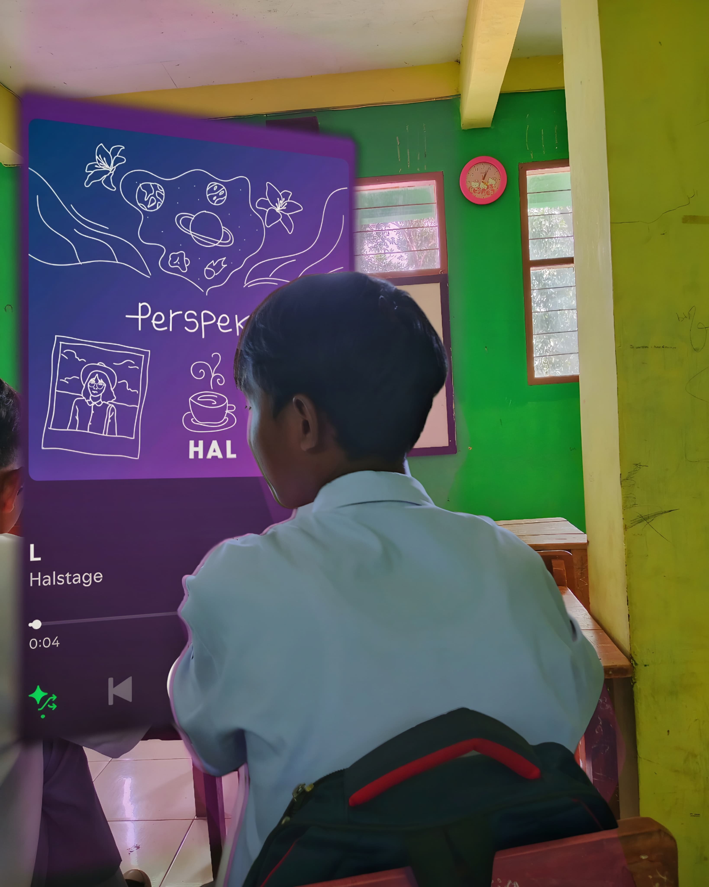
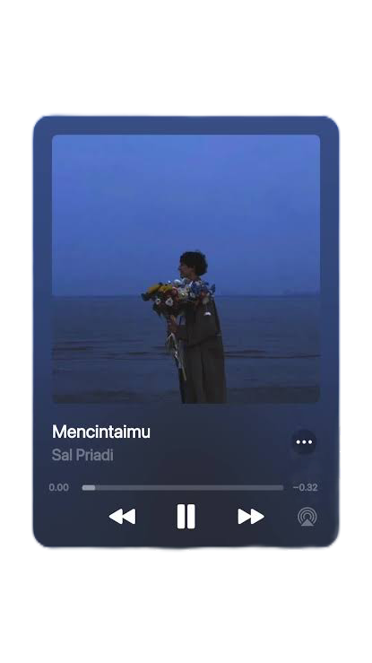

Halo! Saya adalah seorang Anak Laki Laki dan pecinta Nasgor goreng. Saya sangat menikmati Nasgor goreng di saat saya lapar dan Nasgor Goreng sangat enak.
Nama saya Lutfyy, saya juga suka Mi ayam dan bermain rolnux. Saya percaya bahwa kesempatan tidak hanya datang satu kali selagi kita terus berusaha.
